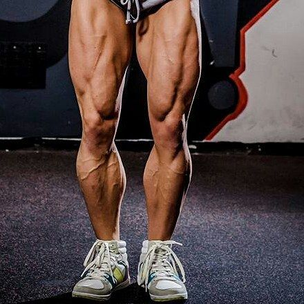

building leg muscles
Now, our legs are home to some of the strongest muscles in our body. I mean, they have to be to hold your whole body up, so imagine what excercising those already powerful muscles will do.
this will take you places with your body you didnt think was possible. but remember to do this with safety and moderation and maybe a spotter.
Here are some of the best leg workouts there are.here's another video on leg muscles in-case you need a better example.
| no steriods. | use whatever motivates you. |
| workout with safety. | have a spotter. |
| be patient with yourself. | trust the process. |